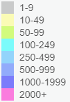

CyIPT is a tool to aid decision making, not to make the decisions for you
Source: CyIPT
Cycle Street Cycle Lanes Cycle Lanes with light segregation Stepped Cycle Tracks Segregated Cycle Track Cycle Lane on Path Segregated Cycle Track on PathGrouping of the Recommended Infrastructure into fundable schemes
Costs Estimates:
to
Source: CyIPT
Cycle Street Cycle Lanes Cycle Lanes with light segregation Stepped Cycle Tracks Segregated Cycle Track Cycle Lane on Path Segregated Cycle Track on PathSource: CyIPT
Source: DCLG / OS
Analysis By: CyIPT
14 + m 12 - 14 m 10 - 12 m 8 - 10 m 6 - 8 m 4 - 6 m 2 - 4 m 0 - 2 m

Note: Zoom in for smaller flows
Source: PCT
Analysis By: CyIPT
Simple
Source: BikeData
Complex
This layer applies DfT point traffic counts to the road network
Source: DfT
Analysis By: CyIPT
BikeData Version
CyIPT: Points Version
Years: to
Severity:
Source: DfT / Stats19
Show local or local & national groups
Souce: BikeData